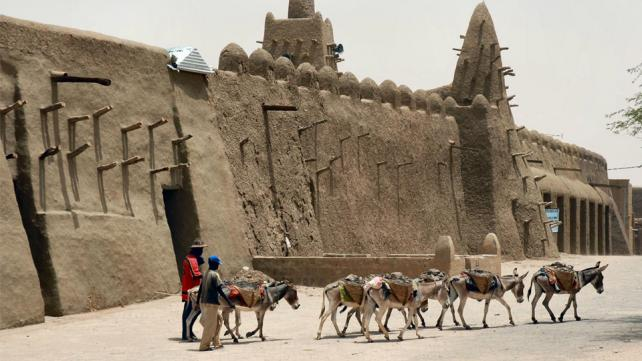

Which City
Timbuktu - Mali
Timbuktu is best known for its famous Djinguereber Mosque and prestigious Sankore University, both of which were established in the early 1300s under the reign of the Mali Empire, most famous ruler, Mansa Musa. ... Timbuktu's greatest contribution to Islam and world civilization was its scholarship.Combined with its relative inaccessibility, "Timbuktu" has come to be used as a metaphor for exotic, distant lands. Today, Timbuktu is an impoverished town, although its reputation makes it a tourist attraction, and it has an airport.
A language i would like to learn : Swahili
| Swahili Phrase | English Phrase |
|---|---|
| Jambo | Hello |
| Habari Gani? | How are you? |
| Kwa heri | Goodbye |
| tutaonana | See you later |
| nafurahi kukuona | Nice to meet you |
Three Historical Sites
- The Castle
- District Six
- City Hall
1. This is The Castle

A Cape Town landmark, the Castle of Good Hope, is a prime example of a “star fort”. Built between 1666 and 1679 by the Dutch East India Company, it's the oldest existing colonial building in South Africa. Its position marks the original shoreline before years of land reclamation changed the Table Bay coastline.